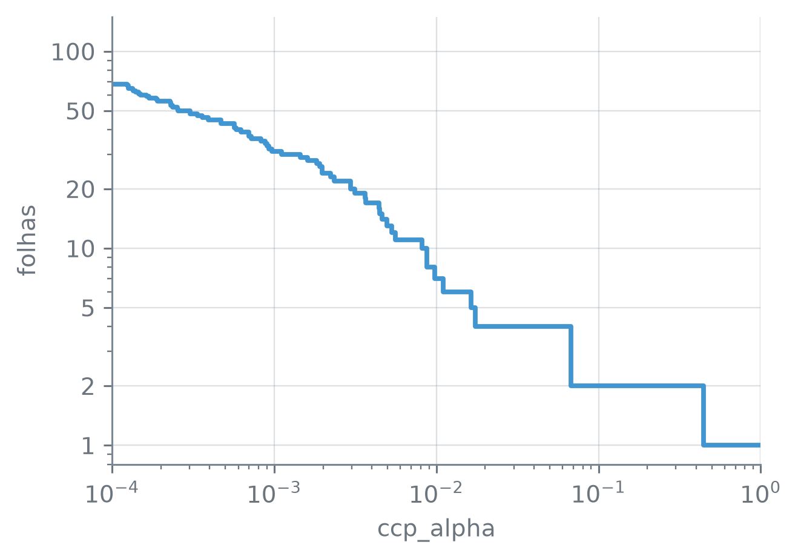

numero_br = lambda valor, casas=2: (
f"{valor:,.{casas}f}".replace(",", "_").replace(".", ",").replace("_", ".")
.replace("-", "−")
)Podando a Árvore
Nota
Esta seção corresponde à seção 8.1.1 de James et al. (2023).
Uma árvore que prevê o salário de jogadores de beisebol e cresce até cada folha ficar com um jogador só, ou só com jogadores de salário igual, erra pouco ou nada no treino. Quanto ela erra num jogador que não viu? E uma árvore pequena demais, com duas ou três folhas, perde o quê? Entre as duas pontas há muitas árvores de tamanho intermediário, e é entre elas que se escolhe.
A função numero_br escreve os números com a pontuação brasileira:
Uma árvore grande
Os dados são os jogadores de Hitters com salário registrado, e a resposta y é o logaritmo do salário. A árvore pode perguntar sobre todas as colunas, não só anos e rebatidas, e três delas são de texto:
hitters = pd.read_csv("dados/Hitters.csv").dropna()
print("jogadores:", len(hitters))
print(hitters[["liga", "divisao", "liga_seguinte"]].nunique())jogadores: 263
liga 2
divisao 2
liga_seguinte 2
dtype: int64df[colunas].nunique() — o número de valores distintos de cada coluna da lista.
São 263 jogadores, e cada coluna de texto tem duas categorias. Cada uma vira uma coluna indicadora de 0 e 1, e os jogadores são divididos em duas metades, uma para treinar e outra para medir o erro de teste:
y = np.log(hitters["salario"])
X = pd.get_dummies(hitters.drop(columns="salario"),
drop_first=True, dtype=float)
for coluna in X.columns:
if coluna not in hitters.columns:
print("indicadora:", coluna)
treino_X, teste_X, treino_y, teste_y = train_test_split(
X, y, train_size=132, random_state=12)
print("colunas:", X.shape[1])
print("treino:", len(treino_X), " teste:", len(teste_X))indicadora: liga_Nacional
indicadora: divisao_Oeste
indicadora: liga_seguinte_Nacional
colunas: 19
treino: 132 teste: 131pd.get_dummies(df, drop_first, dtype) — troca cada coluna de texto por colunas indicadoras, uma por categoria, com 1 na linha que tem aquela categoria e 0 nas outras. drop_first=True descarta a primeira categoria de cada coluna, em ordem alfabética, que fica implícita nos zeros das outras; dtype=float grava 0,0 e 1,0 em vez de False e True.
df.drop(columns=coluna) — a tabela sem a coluna dada. X.shape — o par (linhas, colunas); X.shape[1] é o número de colunas.
train_test_split(X, y, train_size, random_state) — sorteia quais linhas vão para o treino e quais para o teste; train_size=132 põe 132 linhas no treino e o resto no teste, e random_state fixa o sorteio.
As categorias que ficaram implícitas são as primeiras em ordem alfabética: liga_Nacional vale 0 para a liga Americana, divisao_Oeste vale 0 para a divisão Leste.
Sem nenhum limite, a árvore cresce até não ter mais o que dividir:
grande = DecisionTreeRegressor(random_state=12).fit(treino_X, treino_y)
folha_grande = grande.apply(treino_X)
por_folha = pd.Series(folha_grande).value_counts()
distintos = treino_y.groupby(folha_grande).nunique()
print("folhas:", grande.get_n_leaves())
print("profundidade:", grande.get_depth())
print("folhas com 1 jogador:",
numero_br(100 * (por_folha == 1).mean(), 1) + "%")
print("folha com salários diferentes:", bool((distintos > 1).any()))
mse_treino = mean_squared_error(treino_y, grande.predict(treino_X))
mse_teste = mean_squared_error(teste_y, grande.predict(teste_X))
mse_nulo = mean_squared_error(
teste_y, np.full(len(teste_y), treino_y.mean()))
print("MSE de treino:", numero_br(mse_treino, 4))
print("MSE de teste:", numero_br(mse_teste, 4))
print("teste, média do treino:", numero_br(mse_nulo, 4))
print("teste < metade do da média:", bool(mse_teste < mse_nulo / 2))folhas: 121
profundidade: 11
folhas com 1 jogador: 94,2%
folha com salários diferentes: False
MSE de treino: 0,0000
MSE de teste: 0,3833
teste, média do treino: 0,8393
teste < metade do da média: Trues.groupby(rotulos) — separa a série pelos rotulos, um por linha; aqui, a folha de cada jogador. Seguido de .nunique(), dá o número de valores distintos em cada grupo.
mean_squared_error(y, previsto) — o erro quadrático médio: a média de \((y_i - \hat y_i)^2\).
np.full(n, valor) — um array de n posições, todas com valor; aqui, a média do treino repetida para cada jogador do teste.
A árvore tem mais de uma centena de folhas para 132 jogadores de treino, e mais de 90% das folhas guardam um jogador só. O MSE de treino é 0,0000: cada jogador de treino recebe a média da sua folha, e nenhuma folha junta jogadores de salários diferentes. Numa folha de um jogador, a média é o próprio salário dele; nas outras, todos os jogadores ganham o mesmo, e a árvore parou de dividir porque não havia mais erro a reduzir. No teste, o MSE deixa de ser zero. Prever para todo jogador do teste a média do treino, sem árvore nenhuma, dá 0,8393, e a árvore grande fica abaixo da metade disso. Ela ajuda, mas o erro de treino zero não diz quanto: a árvore decorou os 132 jogadores.
Uma árvore menor teria menos variância, ao custo de algum viés. Um jeito de obtê-la seria parar de crescer quando nenhum corte reduzisse o RSS além de um limiar. Esse critério é míope: um corte que quase não reduz o RSS pode abrir caminho para um corte muito bom logo abaixo dele, e a árvore que parou antes nunca chega a vê-lo. A alternativa é crescer a árvore grande primeiro e depois cortar os galhos que não compensam, olhando a árvore inteira. É a poda.
Poda por custo-complexidade
Podar uma árvore é escolher uma subárvore: juntar os descendentes de um nó interno numa folha só, a média de todos os jogadores que passavam por ele. A árvore grande, \(T_0\), tem subárvores demais para estimar o erro de teste de cada uma. A poda precisa reduzir a lista a uma sequência curta de candidatas, e a saída lembra o lasso da seção 11.4: somar ao erro de treino uma penalidade pelo tamanho. No lasso, a penalidade era \(\lambda\sum_j|\beta_j|\); na árvore, ela conta folhas, como o \(d\) dos critérios da seção 11.2 contava preditores.
Na poda por custo-complexidade (cost complexity pruning), para cada valor de um parâmetro de ajuste \(\alpha \ge 0\), a subárvore \(T \subset T_0\) escolhida é a que minimiza
\[ \begin{aligned} &\sum_{m=1}^{|T|} \sum_{i:\, x_i \in R_m} \left(y_i - \hat y_{R_m}\right)^2\\ &\quad + \alpha |T|, \end{aligned} \tag{8.4} \]
em que \(|T|\) é o número de folhas de \(T\), \(R_m\) é o retângulo da \(m\)-ésima folha e \(\hat y_{R_m}\) é a média da resposta dos jogadores de treino em \(R_m\). A primeira parcela é o RSS de treino da subárvore.
Com \(\alpha = 0\), (8.4) é só o RSS de treino, e a subárvore que o minimiza é a própria \(T_0\). Cada folha a mais custa \(\alpha\), e uma folha só vale a pena se reduzir o RSS em mais do que isso. Com \(\alpha\) grande o bastante, sobra a raiz sozinha, que prevê a média de todos. Entre os dois extremos, quando \(\alpha\) cresce, os galhos caem, e cai primeiro o que menos reduz o RSS por folha: por isso o método também se chama poda do elo mais fraco (weakest link pruning). As subárvores saem aninhadas, cada uma dentro da anterior, e a sequência inteira sai de uma conta só.
No scikit-learn, a conta é o cost_complexity_pruning_path, que devolve os valores de ccp_alpha em que um galho cai e o MSE de treino da subárvore que sobra em cada um. A escala é outra: o scikit-learn usa o MSE de treino, o RSS dividido pelo número \(n\) de jogadores de treino, e minimiza \(\text{MSE} + \texttt{ccp\_alpha}\,|T|\). Multiplicando tudo por \(n\), fica (8.4) com \(\alpha = n \times \texttt{ccp\_alpha}\).
caminho = grande.cost_complexity_pruning_path(treino_X, treino_y)
alfas, mses = caminho.ccp_alphas, caminho.impurities
print("valores no caminho:", len(alfas))
print("raiz sozinha a partir de", numero_br(alfas[-1], 4))
print("valores repetidos:", bool((np.diff(alfas) < 1e-12).any()))valores no caminho: 118
raiz sozinha a partir de 0,4435
valores repetidos: Truearvore.cost_complexity_pruning_path(X, y) — a sequência de podas da árvore ajustada. .ccp_alphas são os valores de ccp_alpha em que um galho cai, em ordem crescente, começando em zero; .impurities, o MSE de treino da subárvore que sobra em cada um.
np.diff(x) — a diferença entre cada elemento e o anterior; aqui, abaixo de \(10^{-12}\) marca dois valores consecutivos iguais a menos do arredondamento.
Os alfas do caminho são os pontos de troca: exatamente num deles, a subárvore está passando de uma para a outra. Para ter uma subárvore de cada trecho, a grade toma um ponto entre cada par de valores consecutivos, a média geométrica dos dois, \(\sqrt{a_k\, a_{k+1}}\), que fica no meio do intervalo em escala logarítmica. O primeiro ponto é o zero, e a grade para antes do último valor do caminho, a partir do qual sobra só a raiz.
A saída valores repetidos: True, do chunk do caminho, mostra que há valores consecutivos iguais a menos do arredondamento: aí o ponto cai em cima deles, e não dentro de um intervalo, e dois pontos da grade podem dar o mesmo tamanho. Cada ponto é uma árvore podada:
grade = np.r_[0.0, np.sqrt(alfas[1:-1] * alfas[2:])]
tamanhos = pd.DataFrame({
"ccp_alpha": grade,
"folhas": [DecisionTreeRegressor(ccp_alpha=a, random_state=12)
.fit(treino_X, treino_y).get_n_leaves() for a in grade],
})
print("pontos na grade:", len(grade))
print("tamanhos distintos:", tamanhos["folhas"].nunique())
print("em 0, a árvore inteira:",
bool(tamanhos["folhas"].iloc[0] == grande.get_n_leaves()))
print("folhas nunca aumentam:",
tamanhos["folhas"].is_monotonic_decreasing)
ausentes = sorted(set(range(2, 21)) - set(tamanhos["folhas"]))
print("tamanhos ausentes de 2 a 20:", ausentes)pontos na grade: 117
tamanhos distintos: 116
em 0, a árvore inteira: True
folhas nunca aumentam: True
tamanhos ausentes de 2 a 20: [9]np.r_[a, b] — junta valores e arrays num array só. np.sqrt(x) — a raiz quadrada de cada elemento.
DecisionTreeRegressor(ccp_alpha) — cresce a árvore e depois a poda com esse ccp_alpha, que vale \(\alpha/n\) na escala de (8.4), com \(n\) o número de linhas do ajuste.
s.iloc[i] — o valor na posição i da série, contando do zero; s.iloc[-1] é o último.
Em ccp_alpha = 0 fica a árvore inteira, e ao longo da grade as folhas nunca aumentam. A grade tem menos tamanhos distintos que pontos, e não dá uma subárvore de cada tamanho: entre 2 e 20 folhas, falta a de 9. O que acontece na passagem por 10 folhas mostra por quê:
i = tamanhos.index[tamanhos["folhas"] == 8][0]
antes, depois = [DecisionTreeRegressor(ccp_alpha=a, random_state=12)
.fit(treino_X, treino_y) for a in grade[i - 1:i + 1]]
pares = pd.DataFrame({"antes": antes.apply(treino_X),
"depois": depois.apply(treino_X)})
juntou = pares.groupby("depois")["antes"].nunique()
print("folhas:", antes.get_n_leaves(), "→", depois.get_n_leaves())
print("folhas novas:", (juntou > 1).sum())
print("folhas antigas que ela junta:", juntou.max())folhas: 10 → 8
folhas novas: 1
folhas antigas que ela junta: 3df.index[mascara][0] — o rótulo da primeira linha em que a mascara vale True; aqui, o primeiro ponto da grade com 8 folhas.
De 10 folhas, a poda seguinte vai direto a 8. Caiu um galho só: uma única folha da subárvore de 8 reúne mais de uma folha da de 10, três delas. O nó que virou folha tinha três folhas abaixo dele, e trocá-lo por uma folha tira duas de uma vez (10 − 3 + 1 = 8). É esse o mecanismo da poda: um nó interno inteiro vira folha, com a média de todos os jogadores que passavam por ele.
x_degraus = np.r_[alfas[1:], 1.0]
y_degraus = np.r_[tamanhos["folhas"].to_numpy()[1:], 1, 1]
fig, ax = plt.subplots(figsize=(4.8, 3.4))
ax.step(x_degraus, y_degraus, where="post", color="C0", linewidth=2)
ax.set_xscale("log")
ax.set_yscale("log")
ax.set_xlim(1e-4, 1)
ax.set_ylim(0.8, 150)
ax.set_yticks([1, 2, 5, 10, 20, 50, 100])
ax.set_yticklabels(["1", "2", "5", "10", "20", "50", "100"])
ax.set_xlabel("ccp_alpha")
ax.set_ylabel("folhas")
plt.tight_layout()
plt.show()
ccp_alpha, os dois eixos em escala logarítmica. Cada degrau é uma poda; à esquerda de 0,0001, a curva continua subindo até as folhas da árvore inteira, em ccp_alpha = 0.
s.to_numpy() — os valores da série como array do numpy, sem os rótulos. ax.step(x, y, where="post") — uma linha em degraus: cada y[i] vale de x[i] até x[i + 1].
ax.set_xscale("log"), ax.set_yscale("log") — eixos em escala logarítmica, em que cada multiplicação por 10 ocupa o mesmo espaço. ax.set_yticks, ax.set_yticklabels — as posições das marcas do eixo e o texto de cada uma.
Que grandeza é o ccp_alpha de um degrau? O penúltimo galho a cair, antes do que deixa a raiz sozinha, é o que leva de 3 para 2 folhas. No ponto de troca, as duas subárvores empatam em \(\text{MSE} + \texttt{ccp\_alpha}\,|T|\), e o ccp_alpha daquele ponto é exatamente quanto o MSE de treino sobe com a folha perdida:
print("folhas:", tamanhos["folhas"].iloc[-2], "→",
tamanhos["folhas"].iloc[-1])
print("MSE:", numero_br(mses[-3], 4), "→", numero_br(mses[-2], 4))
print("ccp_alpha:", numero_br(alfas[-2], 4))
print("diferença igual:",
bool(np.isclose(mses[-2] - mses[-3], alfas[-2])))
print("α = 132 × ccp_alpha =", numero_br(132 * alfas[-2]))folhas: 3 → 2
MSE: 0,2258 → 0,2935
ccp_alpha: 0,0677
diferença igual: True
α = 132 × ccp_alpha = 8,94np.isclose(a, b) — True se a e b são iguais a menos do arredondamento de ponto flutuante.
O MSE de treino sobe de 0,2258 para 0,2935, e a diferença é o ccp_alpha do degrau, 0,0677. Em RSS, com os 132 jogadores de treino, a folha perdida custa 8,94: é o \(\alpha\) de (8.4) em que perder essa folha passa a compensar.
A comparação das folhas de cada jogador nas duas subárvores diz qual galho cai nesse degrau:
tres, duas = [DecisionTreeRegressor(ccp_alpha=a, random_state=12)
.fit(treino_X, treino_y) for a in grade[-2:]]
folha_duas = duas.apply(treino_X)
pares = pd.DataFrame({"tres": tres.apply(treino_X),
"duas": folha_duas})
nova = pares.groupby("duas")["tres"].nunique().idxmax()
n_nova = duas.tree_.n_node_samples[nova]
no = np.flatnonzero((tres.tree_.feature >= 0)
& (tres.tree_.n_node_samples == n_nova))[0]
print("folhas:", tres.get_n_leaves(), "→", duas.get_n_leaves())
print("nó que virou folha:")
print(" ", X.columns[tres.tree_.feature[no]], "≤",
numero_br(tres.tree_.threshold[no], 1))
print("jogadores nele:", n_nova)
print("média da folha nova:",
numero_br(treino_y[folha_duas == nova].mean()))folhas: 3 → 2
nó que virou folha:
impulsionadas_carreira ≤ 70,5
jogadores nele: 54
média da folha nova: 5,11s.idxmax() — o rótulo do maior valor da série; aqui, a folha da subárvore de 2 que junta mais folhas da de 3. arvore.tree_.n_node_samples — para cada nó, o número de jogadores de treino que passam por ele. np.flatnonzero(mascara) — as posições em que a mascara vale True; aqui, a do nó interno da subárvore de 3 com o mesmo número de jogadores da folha nova, que só o nó juntado tem.
O nó que virou folha é o que pergunta se impulsionadas_carreira ≤ 70,5, com 54 jogadores de treino. As duas folhas abaixo dele viram uma só, que prevê para os 54 a média deles, 5,11. A figura desenha as duas subárvores com a função em_portugues da seção 12.1, com duas mudanças para as caixas caberem na largura da figura: os nomes de coluna terminados em _carreira quebram em duas linhas, e, nas folhas, que não têm pergunta (≤), o valor da média desce para a linha de baixo.
def em_portugues(anotacoes):
"""Traduz e ajusta as caixas que o plot_tree desenha."""
for anotacao in anotacoes:
texto = (anotacao.get_text()
.replace("samples", "n").replace("value", "média")
.replace("<=", "≤")
.replace("True", "sim").replace("False", "não")
.replace("_carreira", "_\ncarreira"))
if "≤" not in texto:
texto = texto.replace("média = ", "média =\n")
texto = re.sub(r"(\d)\.(\d)", r"\1,\2", texto)
anotacao.set_text(texto)
caixa = anotacao.get_bbox_patch()
if caixa is not None:
caixa.set(facecolor="white", edgecolor="0.45")fig, eixos = plt.subplots(2, 1, figsize=(4.8, 7.6), height_ratios=[3, 2])
for ax, arvore, destaque, titulo in [(eixos[0], tres, no, "antes: 3 folhas"),
(eixos[1], duas, nova, "depois: 2 folhas")]:
anotacoes = plot_tree(arvore, feature_names=list(X.columns),
impurity=False, rounded=True, precision=2,
fontsize=10, ax=ax)
em_portugues(anotacoes)
caixas = [a for a in anotacoes if a.get_bbox_patch() is not None]
caixas[destaque].get_bbox_patch().set(edgecolor="C1", linewidth=2.5)
ax.set_title(titulo)
plt.show()![Duas árvores empilhadas. A de cima, com o título antes: 3 folhas, pergunta na raiz se vezes_ao_bastao_carreira é menor ou igual a 1452,0, com 132 jogadores. O ramo sim leva a uma caixa com borda laranja que pergunta se impulsionadas_carreira é menor ou igual a 70,5, com 54 jogadores e média 5,11, de onde saem folhas com 23 jogadores e média 4,64 e com 31 jogadores e média 5,46. O ramo não leva a uma folha com 78 jogadores e média 6,46. A de baixo, com o título depois: 2 folhas, tem a mesma raiz; o ramo sim leva a uma folha com borda laranja, com 54 jogadores e média 5,11, e o ramo não, à mesma folha de 78 jogadores e média 6,46.](02-podando-a-arvore_files/figure-html/fig-poda-output-1.png)
plt.subplots(2, 1, figsize, height_ratios) — dois painéis empilhados; height_ratios=[3, 2] dá ao de cima, com três níveis de caixas, mais altura que ao de baixo, com dois. a.get_bbox_patch().set(edgecolor, linewidth) — muda a cor e a espessura da borda da caixa; só as caixas dos nós têm borda, e na ordem dos números dos nós, por isso a lista caixas deixa de fora os rótulos “sim” e “não”. ax.set_title(texto) — o título do painel.
Escolher α por validação cruzada
A sequência de subárvores está pronta; falta escolher uma, e o erro de treino não serve, porque ele sempre prefere \(T_0\). O procedimento completo tem quatro passos:
- crescer uma árvore grande com os dados de treino;
- podá-la por custo-complexidade, obtendo a melhor subárvore para cada \(\alpha\);
- escolher \(\alpha\) por validação cruzada em \(K\) grupos: para cada grupo, repetir os passos 1 e 2 com os outros \(K - 1\), medir o erro de cada \(\alpha\) no grupo deixado de fora, e tirar a média dos \(K\) grupos; fica o \(\alpha\) de menor erro médio;
- devolver a subárvore do passo 2 correspondente a esse \(\alpha\).
O GridSearchCV, que a seção 11.5 usou para escolher o \(\lambda\) da ridge e do lasso, faz o passo 3 com a grade de ccp_alpha: em cada grupo, cada ajuste com um ccp_alpha cresce a árvore nos outros grupos e a poda, que são os passos 1 e 2 refeitos. Com 132 jogadores de treino, 6 grupos dão 22 jogadores cada um. A grade vai em ordem decrescente de ccp_alpha, da árvore menor para a maior: quando dois valores empatam no erro, o GridSearchCV fica com o primeiro da grade, e o empate se resolve a favor da árvore menor.
Antes da saída: a curva do erro de treino só desce quando a árvore ganha folhas. A de validação cruzada também?
busca = GridSearchCV(
DecisionTreeRegressor(random_state=12),
{"ccp_alpha": grade[::-1]},
cv=KFold(6, shuffle=True, random_state=12),
scoring="neg_mean_squared_error",
)
busca.fit(treino_X, treino_y)
res = busca.cv_results_
erros = -np.array([res[f"split{k}_test_score"] for k in range(6)])
curvas = pd.DataFrame({
"ccp_alpha": grade[::-1],
"folhas": tamanhos["folhas"].to_numpy()[::-1],
"cv": erros.mean(axis=0),
"desvio": erros.std(axis=0, ddof=1) / np.sqrt(6),
})
curvas = curvas.drop_duplicates("folhas").set_index("folhas")
escolhida = busca.best_estimator_
k_min = curvas["cv"].idxmin()
teto = curvas.loc[k_min, "cv"] + curvas.loc[k_min, "desvio"]
print("folhas:", escolhida.get_n_leaves())
print("ccp_alpha:", numero_br(busca.best_params_["ccp_alpha"], 4))
print("α = 132 × ccp_alpha =",
numero_br(132 * busca.best_params_["ccp_alpha"]))
print("CV:", numero_br(curvas.loc[k_min, "cv"], 4))
print("desvio:", numero_br(curvas.loc[k_min, "desvio"], 4))
segunda = curvas["cv"].nsmallest(2)
print("segunda:", segunda.index[1], "folhas,",
numero_br(segunda.iloc[1], 4))
print("teto:", numero_br(teto, 4))
print("regra do um desvio:",
curvas.index[curvas["cv"] <= teto].min(), "folhas")folhas: 4
ccp_alpha: 0,0343
α = 132 × ccp_alpha = 4,53
CV: 0,2694
desvio: 0,0499
segunda: 7 folhas, 0,2841
teto: 0,3193
regra do um desvio: 4 folhasKFold(k, shuffle, random_state) — divide as linhas em k grupos; shuffle=True sorteia quem vai para cada grupo, e random_state fixa o sorteio.
GridSearchCV(estimador, grade, cv, scoring) — o erro de validação cruzada do estimador em cada valor da grade, um dicionário {"parametro": valores}, com os grupos de cv. scoring="neg_mean_squared_error" mede o MSE com o sinal trocado, porque a busca maximiza a pontuação.
busca.cv_results_ — as pontuações da busca; em f"split{k}_test_score", a do grupo k, uma por valor da grade. busca.best_params_ — o valor da grade de menor erro. busca.best_estimator_ — o modelo reajustado com todas as linhas de treino e esse valor.
np.array(lista) — monta um array com a lista; aqui, uma linha por grupo e uma coluna por valor da grade. erros.mean(axis=0), erros.std(axis=0, ddof=1) — a média e o desvio padrão de cada coluna, isto é, de cada valor da grade sobre os 6 grupos; axis=0 percorre as linhas, e ddof=1 põe \(n - 1\) no denominador.
df.drop_duplicates("folhas") — fica com a primeira linha de cada número de folhas. df.set_index("folhas") — usa a coluna como rótulo das linhas. df.loc[rotulo, coluna] — o valor na linha de rótulo rotulo e na coluna dada. s.nsmallest(2) — os dois menores valores da série.
A validação cruzada escolhe a subárvore de 4 folhas, com erro de 0,2694, em ccp_alpha = 0,0343, isto é, \(\alpha\) = 4,53 na escala de (8.4). A segunda melhor tem 7 folhas e erro de 0,2841. O desvio, \(s/\sqrt{6}\) com \(s\) o desvio padrão dos erros dos 6 grupos, é o da regra do um desvio da seção 11.2, e a regra também fica com 4 folhas: o teto é 0,3193, e nenhuma subárvore menor fica abaixo dele.
Dentro de cada grupo, a árvore é outra, crescida com 110 jogadores (132 − 22). Como o ccp_alpha é \(\alpha/n\) com o \(n\) de cada ajuste, ali o mesmo ccp_alpha corresponde a \(\alpha = 110 \times\) ccp_alpha em (8.4), e pode deixar a árvore com um número de folhas diferente. As folhas que a figura abaixo põe no eixo horizontal são as da subárvore com aquele ccp_alpha nos 132 jogadores de treino. A mesma figura traz o erro de treino e o de teste de cada subárvore. A curva de teste está ali só para julgar a escolha: nenhum ponto dela entrou na decisão, que a validação cruzada tomou com os 132 jogadores de treino.
for k, linha in curvas.iterrows():
podada = DecisionTreeRegressor(ccp_alpha=linha["ccp_alpha"],
random_state=12).fit(treino_X, treino_y)
curvas.loc[k, "treino"] = mean_squared_error(
treino_y, podada.predict(treino_X))
curvas.loc[k, "teste"] = mean_squared_error(
teste_y, podada.predict(teste_X))
mse_escolhida = mean_squared_error(teste_y, escolhida.predict(teste_X))
print("MSE de teste da escolhida:", numero_br(mse_escolhida, 4))
print("abaixo do da grande:", bool(mse_escolhida < mse_teste))
print("menor teste em:", curvas["teste"].idxmin(), "folhas")
de_2_a_20 = curvas.loc[curvas.index <= 20].sort_index()
print("treino só desce:",
de_2_a_20["treino"].is_monotonic_decreasing)
print("teste acima da CV:",
(de_2_a_20["teste"] > de_2_a_20["cv"]).sum(), "de", len(de_2_a_20))MSE de teste da escolhida: 0,3630
abaixo do da grande: True
menor teste em: 4 folhas
treino só desce: True
teste acima da CV: 17 de 18df.iterrows() — percorre a tabela uma linha por vez, devolvendo o rótulo (aqui, o número de folhas) e a linha. df.loc[k, "treino"] = valor — grava o valor na linha k da coluna, criando a coluna se ela não existe. df.loc[mascara] — só as linhas em que a mascara vale True. df.sort_index() — as linhas em ordem crescente de rótulo.
ate_20 = curvas.loc[curvas.index <= 20].sort_index()
fig, ax = plt.subplots(figsize=(4.8, 3.6))
ax.plot(ate_20.index, ate_20["treino"], color="0.45", linewidth=2,
label="treino")
ax.fill_between(ate_20.index, ate_20["cv"] - ate_20["desvio"],
ate_20["cv"] + ate_20["desvio"], color="C0", alpha=0.3,
linewidth=0)
ax.plot(ate_20.index, ate_20["cv"], color="C0", linewidth=2,
label="validação cruzada")
ax.plot(ate_20.index, ate_20["teste"], color="C1", linewidth=2,
label="teste")
ax.scatter(k_min, curvas.loc[k_min, "cv"], marker="x", s=80,
color="C0", linewidths=2.5, zorder=3, label="_nolegend_")
ax.set_xlim(2, 20)
ax.set_ylim(0, 0.5)
ax.yaxis.set_major_formatter(lambda valor, _: f"{valor:.1f}".replace(".", ","))
ax.set_xlabel("folhas")
ax.set_ylabel("MSE")
ax.legend(loc="center right", bbox_to_anchor=(1, 0.36))
plt.tight_layout()
plt.show()
ax.fill_between(x, abaixo, acima, color, alpha) — pinta a faixa entre as curvas abaixo e acima; alpha é a opacidade. ax.legend(loc, bbox_to_anchor) — a legenda, com o canto loc preso ao ponto bbox_to_anchor, em frações do painel. ax.yaxis.set_major_formatter(funcao) — escreve cada marca do eixo vertical com a função dada, que recebe o valor e a posição; aqui, com uma casa e vírgula decimal.
O erro de treino só desce. O de validação cruzada tem o mínimo em 4 folhas e fica acima dele com mais folhas: as folhas a mais passam a acompanhar o ruído dos jogadores de treino, e a árvore pequena demais, com 2 ou 3 folhas, junta jogadores de salários muito diferentes. O erro de teste da subárvore escolhida é 0,3630, abaixo do da árvore grande e bem abaixo do 0,8393 da média do treino, e o menor erro de teste entre as subárvores também está em 4 folhas. A curva de teste fica acima da de validação cruzada em 17 dos 18 tamanhos da figura, e o 0,2694 da escolhida é o menor de muitos erros estimados com os mesmos 132 jogadores, por isso tende a ser otimista.
A árvore podada
A figura abaixo desenha a subárvore de 4 folhas escolhida, reajustada com os 132 jogadores de treino:
fig, ax = plt.subplots(figsize=(4.8, 4.2))
caixas = plot_tree(escolhida, feature_names=list(X.columns),
impurity=False, rounded=True, precision=2,
fontsize=10, ax=ax)
em_portugues(caixas)
plt.show()
O chunk abaixo imprime o salário típico de cada folha, da esquerda para a direita, que é a ordem dos números dos nós: a exponencial da média do logaritmo, que é a média geométrica dos salários da folha, vezes 1.000, porque o salário está em milhares de dólares. Depois vêm a pergunta de cada nó interno e a correlação entre anos e vezes_ao_bastao_carreira:
folha = escolhida.apply(treino_X)
media_log = treino_y.groupby(folha).mean()
for i, valor in enumerate(media_log, start=1):
print(f"R{i}: {numero_br(valor)} → US$",
numero_br(np.exp(valor) * 1000, 0))
no = escolhida.tree_
for f, corte in zip(no.feature, no.threshold):
if f >= 0:
print(X.columns[f], "≤", numero_br(corte, 1))
print("correlação anos × carreira:", numero_br(
hitters["anos"].corr(hitters["vezes_ao_bastao_carreira"]), 3))R1: 4,64 → US$ 103.316
R2: 5,46 → US$ 235.202
R3: 6,15 → US$ 469.377
R4: 6,83 → US$ 925.119
vezes_ao_bastao_carreira ≤ 1.452,0
impulsionadas_carreira ≤ 70,5
rebatidas ≤ 122,5
correlação anos × carreira: 0,916s.corr(outra) — a correlação entre as duas séries.
A primeira pergunta é sobre as vezes ao bastão na carreira inteira, com corte em 1.452,0. É uma medida de tempo de liga: a correlação dela com anos é de 0,916, e ela faz aqui o papel que anos fez na árvore da seção 12.1. Entre os jogadores com menos tempo, a árvore pergunta pelas corridas impulsionadas na carreira, com corte em 70,5, e os dois grupos ficam com salário típico de US$ 103.316 e US$ 235.202. Entre os mais experientes, a pergunta é sobre as rebatidas da temporada anterior, com corte em 122,5, e os típicos são US$ 469.377 e US$ 925.119. A árvore grande tinha mais de uma centena de folhas; a podada tem 4, e erra menos no teste que ela.
Com outros 132 jogadores no treino, a validação cruzada escolheria o mesmo tamanho, e a primeira pergunta seria sobre a mesma coluna? A função abaixo repete a divisão, o crescimento, a poda e a escolha por validação cruzada, e o chunk a roda com cinco sementes no sorteio do treino, de 1 a 5:
def poda_por_cv(semente):
"""Divide, cresce, poda e escolhe por validação cruzada."""
tr_X, _, tr_y, _ = train_test_split(X, y, train_size=132,
random_state=semente)
arvore = DecisionTreeRegressor(random_state=12).fit(tr_X, tr_y)
a = arvore.cost_complexity_pruning_path(tr_X, tr_y).ccp_alphas
g = np.r_[0.0, np.sqrt(a[1:-1] * a[2:])]
b = GridSearchCV(DecisionTreeRegressor(random_state=12),
{"ccp_alpha": g[::-1]},
cv=KFold(6, shuffle=True, random_state=12),
scoring="neg_mean_squared_error").fit(tr_X, tr_y)
melhor = b.best_estimator_
return melhor.get_n_leaves(), X.columns[melhor.tree_.feature[0]]
outras = pd.DataFrame([poda_por_cv(s) for s in range(1, 6)],
columns=["folhas", "raiz"], index=range(1, 6))
print(outras)
print("folhas de", outras["folhas"].min(), "a", outras["folhas"].max())
print("raiz em vezes ao bastão:",
(outras["raiz"] == "vezes_ao_bastao_carreira").sum(), "de 5") folhas raiz
1 18 vezes_ao_bastao_carreira
2 17 vezes_ao_bastao_carreira
3 4 corridas_carreira
4 3 vezes_ao_bastao_carreira
5 4 vezes_ao_bastao_carreira
folhas de 3 a 18
raiz em vezes ao bastão: 4 de 5pd.DataFrame(linhas, columns, index) — monta uma tabela a partir de uma lista de linhas, com os nomes de coluna e os rótulos dados; aqui, uma linha por semente.
Com as sementes de 1 a 5, a validação cruzada escolhe de 3 a 18 folhas. A coluna da raiz muda menos: é vezes_ao_bastao_carreira em 4 das 5 divisões. O tamanho da árvore podada depende muito de quais 132 jogadores caíram no treino, e a poda reduz a variância da árvore grande, mas não a elimina. Uma saída é não depender de uma árvore só: crescer muitas, cada uma com uma amostra diferente dos jogadores, e juntar as previsões delas, que é o assunto do capítulo 13.
James, Gareth, Daniela Witten, Trevor Hastie, Robert Tibshirani, e Jonathan Taylor. 2023. An Introduction to Statistical Learning with Applications in Python. Springer.